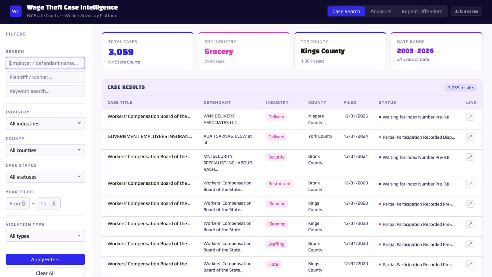
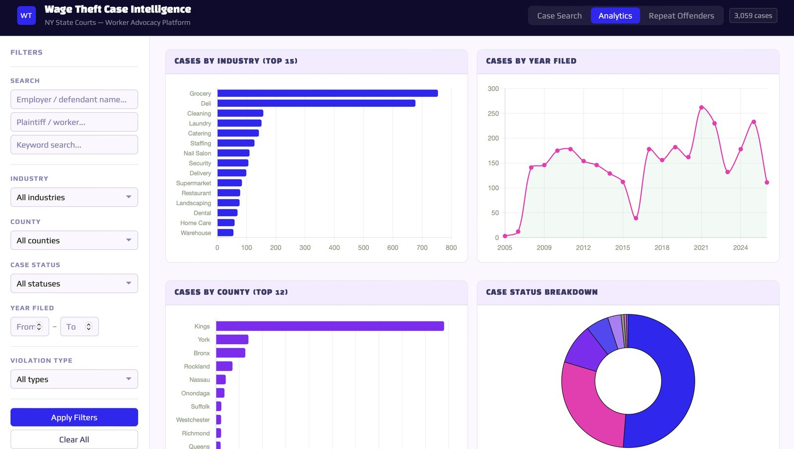

wage_theft_case_intelligence.exe


Wage Theft Case Intelligence
Data Visualization · Public Records · Search & Analytics
A searchable intelligence dashboard built for legal advocates and workers, turning messy, publicly available New York State Court records into something a lawyer can actually use. It indexes 3,059 wage-theft cases filed between 2005 and 2026, with filters for industry, county, case status, and violation type, an analytics view charting cases by industry, year, county, and status, and a repeat-offender lookup so advocates can flag employers with a pattern of violations. It will be helpful to Reclamo's 3M+ non-English-speaking users, closing a critical financial literacy gap for vulnerable populations and helping recover owed wages.